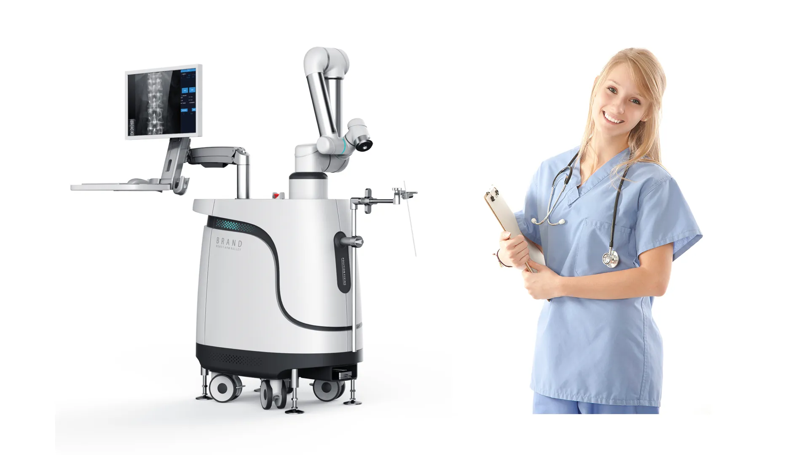

Database · Medical Robots
TINAVI Medical
TINAVI is China's first surgical-robot company, best known for its TiRobot orthopedic systems used in thousands of hospital operations.
Surgical Medical Listed Beijing

Company Overview
- TINAVI pioneered Chinese surgical robotics with the TiRobot, a navigation system for orthopedic and spinal surgery.
- Its systems have been used in tens of thousands of clinical procedures across Chinese hospitals.
- The company is at the center of China's push to make surgical robots affordable and domestic.
Key Facts
| Full Name | Beijing TINAVI Medical Technologies Co., Ltd. |
|---|---|
| Chinese Name | 北京天智航医疗科技股份有限公司 |
| Founded | 2005 |
| Headquarters | Beijing, China |
| Stock Code | 688277.SH (STAR Market) |
| Core Products | TiRobot orthopedic surgical robots |
| Status | China's first surgical robot company |
Actuators & Sensors
- Robotic arm with surgical navigation and tracking.
- Precision positioning for orthopedic drilling and placement.
- Integration with hospital imaging systems.
Supply-Chain Analysis
- TINAVI develops navigation software and integrates components in-house.
- Medical-grade supply chain under strict regulatory oversight.
- Domestic alternative to foreign surgical robots (e.g., Mazor, Medtronic).
Competitor Comparison
Versus foreign surgical robots: TINAVI wins on price, localization and regulatory access in China. It competes with domestic peers (Edge Medical, MedBot, Surgerii) across different surgical specialties.